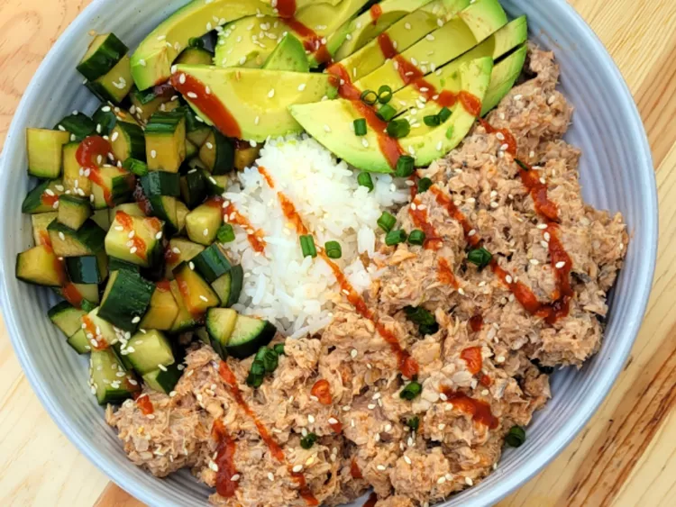

Spicy Canned Salmon Salad Rice Bowl

Description
Canned salmon mixed with rice vinegar, Sriracha, and mayonnaise makes this one spicy salmon salad rice bowl.
Fresh cucumbers, quickly marinated in soy sauce, and sliced avocado add some coolness. Feel free to make this
bowl your own by adding more ingredients.
Ingredients
- 1 cup chopped English cucumber
- 1 tablespoon low-sodium soy sauce
- 1 (14¾ ounce) can pink salmon, skin and bone removed, drained and flaked
- 2½tablespoons chile-garlic sauce (such as Sriracha®)
- 1 tablespoon light mayonnaise
- 1 tablespoon rice vinegar
- 1 avocado - peeled, pitted, and sliced
- 1/2 teaspoon sesame seeds
- 1 tablespoon chopped green onion for garnish (optional)
Steps
- Combine chopped cucumbers and soy sauce in a small bowl and set aside.
- In a small bowl, combine the salmon, Sriracha®, mayonnaise, and rice vinegar.
- In a bowl place cooked rice and top it with the salmon mixture, sliced avocado, and chopped cucumber
mixture. Sprinkle with sesame seeds. Top with extra Sriracha and green onions if desired.